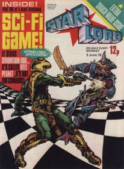
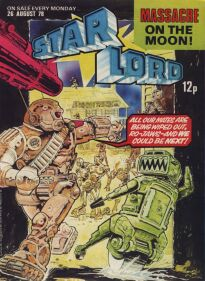
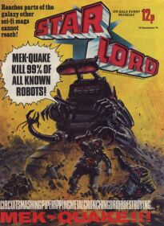
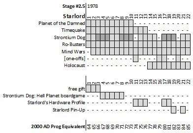

|  |  |  |
| Issue 04 by Carlos Ezquerra | Issue 16 by Kevin O'Neill | Issue 19 by Graham Cotton |
Starlord (or is it Star Lord?) ran (for 22 issues) concurrently with 2000 AD progs 64-85 before being merged with the longer-running title. Good luck searching online for info because you'll just get a bunch of Guardians of the Galaxy hits. This Starlord is the editor of the comic: a sort of Dan Dare in a cape dude who's a bit cheesy next to Tharg's nacho-like goodness.
Reading the plot outlines it starts to become fairly clear why it was Ro-Busters and Strontium Dog that made the leap to 2000 AD when Starlord was folded in.

Planet of the Damned
The Bermuda Triangle meets Death Planet (which started a fortnight before this in 2000 AD): a passenger jet gets Triangle-warped to an inhospitable planet [see title] and has to cope with other survivors from through time (including a helpful Conan-lite dude).
TimeQuake
Time cops stop timequakes (i.e. mess-ups in the past ruining the future).
Oddly pops up in 2000 AD two years after the merger for just four episodes (in progs 148-151).
Strontium Dog
This initial run introduces Johnny Alpha and Wulf Sternhammer as interstellar bounty hunters and establishes key story devices and motifs such as the time bomb, ranged blasters, the Gronk and the Smiling Chukwalla. A few things that don't seem to crop up very often: time drogues, mini-nukes, Alpha's possum ability and Marci (his niece).
Key to the politics of the strip are that Strontium Dogs are disliked by standard cops and that mutants (such as Alpha with his ability to force-read minds and see through walls) are hated by many non-mutants.
Continues with the 2000 AD merger of prog 86.
Ro-Busters
Thunderbirds, but with robots and industrial relations. Odd couple Ro-Jaws and Hammerstein form the focal point of a work force overseen by their irascible owner Howard Quartz - who thinks nothing of having recalcitrant workers dismantled by Mek-Quake (his demented enforcer).
Continues with the 2000 AD merger of prog 86.
Mind Wars
A simple story of psychic fraternal twins and high stakes interstellar war.
Holocaust
Clint Eastwood (here playing Carl Hunter of the FBI) attempts to foil a plot hatched by telepathic alien rats. It's Dirty Harry meets Close Encounters (meets The Pied Piper of Hamelin).